Descubre errores ahora
¿Qué pasa si el archivo de configuración no existe o está corrupto? ¿Y si el contenido de esa variable de entorno está vacío? ¡Son casos fáciles de olvidar! Pero gracias a su forma de tratar los errores y al diseño de su biblioteca, Rust te guiará en esas situaciones de "qué pasa si" incluso antes de que ejecutes tu programa.
La gestión de errores en Rust